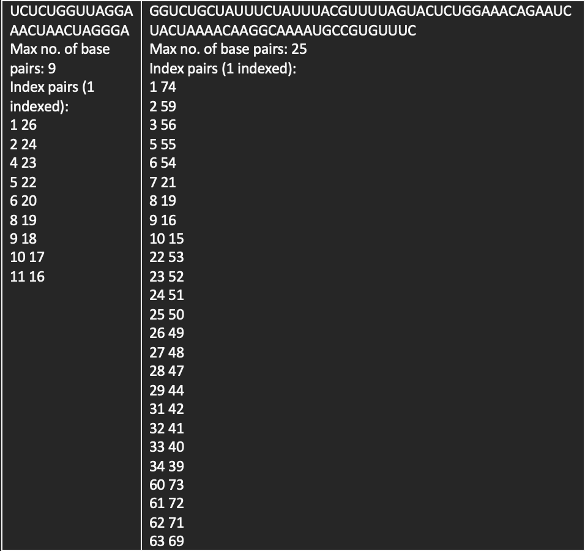
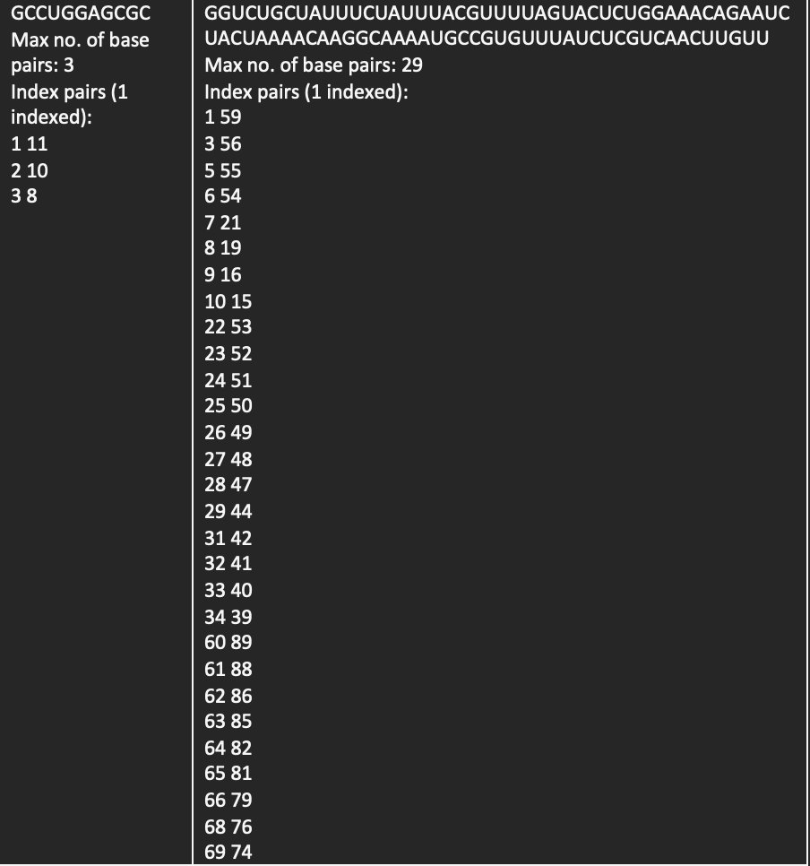
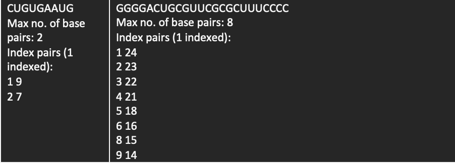
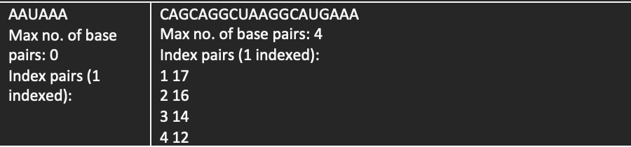

Some sample inputs followed by their corresponding outputs have been shown:
   We can see clearly that as the length of the RNA sequence increases, the runtime of the RNA secondary structure prediction algorithm that finds the maximum number of base pairs INCREASES QUADRATICALLY, that is, it is of O(n^2) complexity where n = length of the RNA sequence.